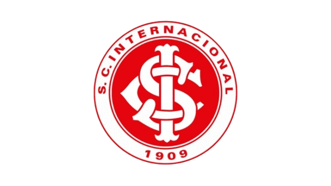

Sport Club Internacional
O Sport Club Internacional foi fundado em 4 de abril de 1909, idealizado e muito incentivado pelos três irmãos Poppe, que haviam se mudado de São Paulo para o Rio Grande do Sul. Eles tiveram contato com o futebol em São Paulo e, estimulados pelo esporte, optaram pela criação do clube, que além de propiciar a prática do futebol, permitia o convívio social entre os participantes.
História e Símbolo
A escolha das cores que representariam o clube ocorreu de modo curioso: foi definida em função de um resultado do carnaval gaúcho. A opção de cores estava entre o vermelho e o verde, que eram as cores-símbolo da disputa do carnaval de rua “venezianos x esmeraldinos”. A vitória do vermelho fez com que o Inter permanecesse colorado até hoje.
O símbolo do clube apresenta as letras SCI – iniciais de Sport Club Internacional – grafadas uma sobre a outra no centro de um escudo. Inicialmente, o símbolo era vermelho em fundo branco e, após a década de 50, passou a ser branco em fundo vermelho.
Títulos do Internacional
- Taça Independência: 1912;
- Campeão Metropolitano de Porto Alegre: 1913;
- Campeão da Cidade de Porto Alegre: 1913 a 1964;
- Campeão Gaúcho: 1927, 1934, 1940, 1941, 1942, 1943, 1944, 1945, 1947, 1948, 1950, 1951, 1952, 1953, 1955, 1961, 1969, 1970, 1971, 1972, 1973, 1974, 1975, 1976, 1978, 1981, 1982, 1983, 1984, 1991, 1992, 1994, 1997, 2003, 2004, 2005, 2008, 2009, 2011, 2012, 2013, 2014 e 2015;
- Campeão do Torneio Quadrangular Régis Pacheco (Bahia): 1953;
- Campeão Pan-americano representando a Seleção Brasileira: 1956;
- Campeão Brasileiro: 1975, 1976 e 1979 (invicto);
- Campeão do Torneio Viña del Mar: 1978 e 2001;
- Campeão da Copa Joan Gamper (Barcelona/Espanha): 1982;
- Campeão do Torneio Costa do Sol (Málaga-Espanha): 1983;
- Campeão do Torneio Costa do Pacífico (Canadá): 1983;
- Vice-Campeão Olímpico representando a Seleção Brasileira: 1984;
- Campeão da Copa Kirin (Tóquio-Japão): 1984;
- Campeão do Torneio Heleno Nunes: 1984;
- 1º Torneio Internacional de Glasgow-Escócia: 1987;
- Taça Governador do Estado (Quadrangular de C. Grande): 1987;
- Torneio da Cidade de Vigo: 1987;
- Torneio de Celta-Espanha: 1989;
- Campeão da Copa do Estado: 1991;
- Copa Wako Denki (Japão): 1992;
- Copa do Brasil: 1992;
- Torneio Beira-Rio: 1994;
- Torneio Mercosul: 1996;
- Super Campeão Gaúcho: 2002;
- Copa Libertadores da América: 2006 e 2010;
- Copa do Mundo de Clubes Fifa: 2006;
- Recopa Sul-Americana: 2007 e 2011;
- Dubai Cup: 2008;
- Copa Sul-Americana: 2008;
- Copa Suruga Bank: 2009;
- Recopa Gaúcha: 2016 e 2017.